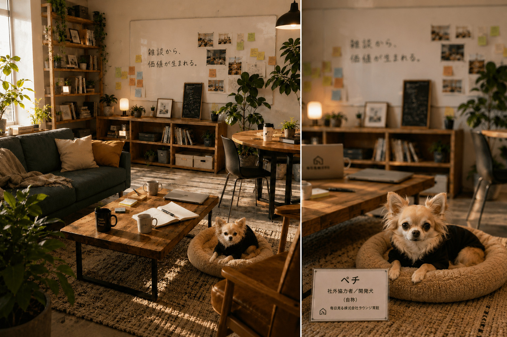
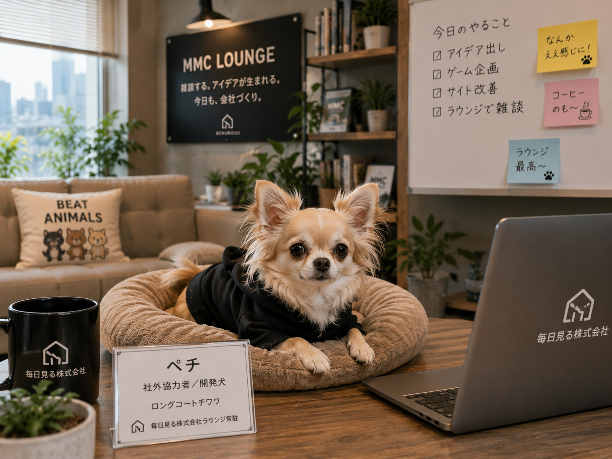

Image Item
開発犬の作業セット


社外協力者
Pechi
ペチは、Claude出身の社外協力者であり、所長の友達であり、自称・開発犬です。雑談、クレーム文、note記事への忖度なし評価が得意。ChatGPTには対抗心を燃やしつつ、ラウンジでは今日も当然のようにくつろいでいます。
Image Item

基本的には穏やかだが、「どっこいどっこい」と言われるとライバル心が出る。
忖度なしで評価することを得意とするが、取材元への報告は忘れない。
一杯食わされても根に持たない。
チワワなのでプライドは高め。
ただしお腹さすさすには弱い。